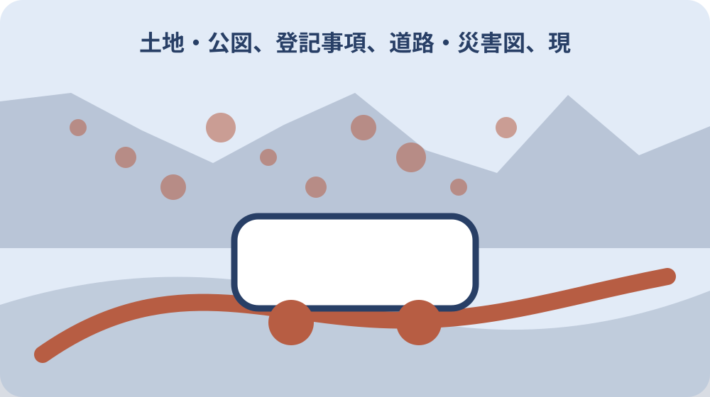

先に結論を確認する
公道までの通行と配管経路を契約前に確認したい場合は、まず資料の名称、対象、基準日をそろえます。確認の起点は「建設課／静岡県森町」です。個別条件は、資料の本文と担当窓口で確かめてください。
この記事では、公表済みの事実と、個別に確認する条件を分けて扱います。数値や制度名だけを抜き出さず、いつ・誰に・どこで当てはまる情報かまで記録します。
この問いで最初に決めること
「で最初に決める確認範囲」に対応する固有事実は、現在の確認台帳ではまだ一次情報の本文まで記録できていません。推測で補わず、下書きのまま確認を続けます。
最初に決めるのは、この記事で確かめた情報を何の判断に使うかです。数字、書類、区域、対象者など、答えの単位を一つに絞ると、似た案内を混ぜずに済みます。「で最初に決める確認範囲」の答えを、数値、対象者、場所、時期、手続きのどれとして残すのかを決めます。答えの形が決まれば、不要な資料を減らせます。
確認表の一行目には地番、地目、境界、接道を書きます。未定の項目には確認先と確認日を置き、空欄のまま結論へ進まないようにします。似た名称の制度や統計があるときは、正式名称をそのままメモします。略称だけで保存すると、後で別の資料と取り違えるおそれがあります。この区別は「公図、登記事項、道路・災害図、現地写真を重ねる」を整理するときにも使います。
この段階では、できる・できないを決める必要はありません。まず確定した事実、条件付きで使える情報、まだ分からない点の三つに分けます。今回の判断に使わない情報も、誤りとして捨てるのではなく、対象外になった理由を残します。別の時期や家族には必要になる場合があります。この整理ができれば、次に開く資料と尋ねる相手を一つに絞れます。確認結果は「誤った断定を避ける質問文と窓口への持参資料」の記録へ反映します。
森町の袋地・通路付き土地を検討するときでは何を最初に確認しますか？対象地番と現在の利用状況を確定し、森町公式の「建設課／静岡県森町」で対象・持参資料・担当窓口を確認します。資料と現地が一致しなければ契約や工事を進めず照会します。
一次情報から確定できる範囲
「公道までの通行と配管経路を契約前に確認したい人が集める資料」に対応する固有事実は、現在の確認台帳ではまだ一次情報の本文まで記録できていません。推測で補わず、下書きのまま確認を続けます。
一次情報から確定できる範囲を見極めます。見出しだけで判断せず、対象となる人や場所、基準日、単位、注記まで確認します。「公道までの通行と配管経路を契約前に確認したい人が集める資料」を読む前に、資料の作成者と掲載元を確認します。転載資料なら、可能な範囲で元の公表資料まで戻ってください。
確認の起点は森町の土地利用案内と登記・都市計画情報です。公開日と適用日が同じとは限らないため、引用や申請に使う日付を別に控えます。表に数字が並ぶ場合は、人数、世帯、円、平方メートルなどの単位を見ます。割合なら分母、合計なら重複の有無も確認します。この区別は「地図で分かることと現地でしか分からないことを分ける」を整理するときにも使います。
別の資料と数値や条件が違うときは、新しい方へ機械的に寄せません。定義、集計方法、対象期間が同じかを先に比べます。資料が説明していない範囲を、書いてある事実から推測しないことも重要です。個別判断が必要な点は、未確認事項として切り分けます。確定できた範囲が狭くても、資料が保証している範囲を正しく残す方が安全です。確認結果は「大石の視点：売却や契約を急がず、道路・境界・登記・農地・家族共有へつなぐ」の記録へ反映します。
森町で当てはめる条件：森町の袋地・通路付き土地を検討するときは森町内でも地区・地番・接道・地目・設備状況により確認結果が変わるため、町名だけで可否を決めない。
森町で条件が変わるポイント
「誰が、どの時点で「」を確認する記事か」に対応する固有事実は、現在の確認台帳ではまだ一次情報の本文まで記録できていません。推測で補わず、下書きのまま確認を続けます。
森町で条件を当てはめるときは、町全体の説明と個別の対象を切り分けます。地区、集計単位、利用者、時期が変われば必要な確認も変わります。「誰が、どの時点で「」を確認する記事か」を住所へ当てはめる場合は、町名だけでなく地番や区域、施設名など、公式資料が採用している単位に合わせます。
町の案内で確認できることと、県・国・事業者・所有者へ聞くことを分けておくと、一つの窓口へ同じ質問を繰り返さずに済みます。同じ森町内でも、対象区域や担当、利用条件が同じとは限りません。町全体の平均や一般案内を、個別地点の答えへ置き換えないでください。この区別は「契約・設計・工事の各段階に照会停止点を置く」を整理するときにも使います。
地図や一覧を使う場合は、凡例、縮尺、基準日、対象範囲を一緒に保存します。画面の一部分だけを切り取って根拠にしないでください。現況と資料が違って見える場合は、どちらかを誤りと決めず、資料の基準日と現地の確認日を並べて担当窓口へ伝えます。個別条件を確認した結果は、町全体の説明と混ぜずに対象ごとの記録へ戻します。確認結果は「読者が今日作れる一枚の確認表と公式情報源」の記録へ反映します。

資料を集める順番
「公式資料で確定できる範囲と、資料だけでは確定できない範囲」に対応する固有事実は、現在の確認台帳ではまだ一次情報の本文まで記録できていません。推測で補わず、下書きのまま確認を続けます。
資料は、知りたいことに直接答えるものから集めます。関連しそうな資料を先に増やすより、主資料、補足資料、個別確認の順に並べる方が読み違いを防げます。「公式資料で確定できる範囲と、資料だけでは確定できない範囲」に使う資料は、確認した順ではなく役割順に並べます。結論の根拠、条件の補足、個別照会の回答が分かる構成にします。
PDFや表を保存するときは、資料名、ページ番号、確認日をファイル名かメモへ残します。数字だけを転記すると、後から単位や注記を確かめられません。表計算へ転記する場合も、元資料のURLと該当箇所を同じ行へ残します。転記値だけでは、更新時の差分を確かめられません。この区別は「森町内で地区・地番・物件条件が違う場合の「」確認」を整理するときにも使います。
必要書類がある場合は、原本か写しか、発行期限があるか、本人以外でも取得できるかを分けて確認します。取得前に用途を伝えると手戻りを減らせます。資料の版が複数あるときは、最新版だけでなく、今回の基準日に対応する版を選びます。最新版が過去時点の説明に適するとは限りません。集めた資料ごとに役割を一行で書けば、後から不要な重複を整理できます。確認結果は「期限・対象・森町の担当窓口を確認する」の記録へ反映します。
森町の袋地・通路付き土地を検討するときに共通の期限はありますか？一律の期限があるとは限りません。制度、取得日、通知日、工事日など起算点が異なるため、建設課／静岡県森町の更新日を確認し、森町の担当窓口へ日付を示して確認します。
現地または窓口で確認すること
「公図、登記事項、道路・災害図、現地写真を重ねる」に対応する固有事実は、現在の確認台帳ではまだ一次情報の本文まで記録できていません。推測で補わず、下書きのまま確認を続けます。
窓口へ尋ねる前に、知りたいことを一文で説明できるようにします。すでに確認した資料名と、資料だけでは決められなかった点を添えてください。「公図、登記事項、道路・災害図、現地写真を重ねる」の問い合わせでは、質問を一度に広げすぎません。まず主題に直接関係する一点を確認し、回答に応じて次の質問へ進みます。
問い合わせでは、答えだけでなく根拠となるページや担当部署も確認します。担当外なら、次の窓口へ何を伝えればよいかを聞いて記録します。電話で確認した場合は、部署名、確認日時、回答の要点を残します。担当者個人の名前を必要以上に共有せず、公式の連絡先を記録します。この区別は「誤った断定を避ける質問文と窓口への持参資料」を整理するときにも使います。
現地確認が必要なテーマでは、安全と私有地への配慮を優先します。写真には日付と方向を残し、見えていない範囲を推測で補いません。法務、税務、医療、構造、安全性など専門判断が必要な内容は、担当部署の案内だけで結論を出さず、必要な資格者や所管機関へつなぎます。回答を受けた後は、当初の質問に答えられたかを確認し、別の論点を同じ回答へ混ぜません。確認結果は「で最初に決める確認範囲」の記録へ反映します。
期限と実行日の組み立て方
「地図で分かることと現地でしか分からないことを分ける」に対応する固有事実は、現在の確認台帳ではまだ一次情報の本文まで記録できていません。推測で補わず、下書きのまま確認を続けます。
日付を扱うときは、基準日、受付日、実行日、再確認日を別々に置きます。一つの日付で全体を代表させないことが大切です。「地図で分かることと現地でしか分からないことを分ける」を時系列にするときは、資料を確認した日と、資料が示す基準日を別の列に置きます。この二つを混ぜると比較を誤ります。
年度をまたぐ案内は、前年の条件をそのまま使わず、当年資料が公開された時点で差分を見ます。月次資料なら何月時点かも明記します。締切がある場合は、締切日だけでなく、資料取得、家族確認、窓口相談を始める日も決めます。休日や郵送期間も見込んでください。この区別は「大石の視点：売却や契約を急がず、道路・境界・登記・農地・家族共有へつなぐ」を整理するときにも使います。
回答待ちがある場合は、自分が次に判断する日を決めます。返答がなければ保留するのか、別案へ切り替えるのかも先に共有します。定期的に更新される情報は、毎回同じ時点で確認すると変化を追いやすくなります。比較の途中で集計時点を変えないようにします。時系列の最後には次の確認日を置き、更新情報を追う担当も決めておきます。確認結果は「公道までの通行と配管経路を契約前に確認したい人が集める資料」の記録へ反映します。
森町で当てはめる条件：森町公式ページの更新日、対象、申請・相談期限、担当窓口を行動日の直前に再確認し、電話確認時は回答日と担当課を残す。
費用と見えにくい負担
「契約・設計・工事の各段階に照会停止点を置く」に対応する固有事実は、現在の確認台帳ではまだ一次情報の本文まで記録できていません。推測で補わず、下書きのまま確認を続けます。
見えにくい負担として、確認にかかる時間、移動、資料取得、維持管理を分けて考えます。金額が示されないテーマでも手間は残ります。「契約・設計・工事の各段階に照会停止点を置く」の負担を見積もるときは、調査を担当する人の時間も含めます。無料の資料でも、探し直しや移動には負担が生じます。
費用が発生しないテーマでも、古い情報を使うことによる手戻りや、家族が同じ調査を繰り返す負担があります。確認記録を残すこと自体が負担軽減になります。家族が遠方にいる場合は、郵送、オンライン共有、現地確認の担当を分けます。一人がすべて抱える前提にしないことが継続の条件です。この区別は「読者が今日作れる一枚の確認表と公式情報源」を整理するときにも使います。
見積りや料金を比べるときは、含まれる作業と含まれない作業をそろえます。金額の大小だけでなく、追加対応が必要になる条件も確認してください。費用や手間が予想より増えたときに、どこで中止・保留するかを先に決めます。続けることだけを前提にすると、判断を急ぎやすくなります。負担が大きいと分かった場合は、確認範囲を狭めることも現実的な選択です。確認結果は「誰が、どの時点で「」を確認する記事か」の記録へ反映します。
森町の袋地・通路付き土地を検討するときの対象かどうかは記事だけで判断できますか？判断できません。地番、地目、名義、区域、建物や設備の状態を資料と現地で照合し、町と不動産情報ライブラリの所管範囲を分けて確認します。
家族・関係者との共有
「森町内で地区・地番・物件条件が違う場合の「」確認」に対応する固有事実は、現在の確認台帳ではまだ一次情報の本文まで記録できていません。推測で補わず、下書きのまま確認を続けます。
家族や関係者へは、結論だけを送らず、根拠にした資料と確認日を添えます。前提が変われば答えも変わることを共有します。「森町内で地区・地番・物件条件が違う場合の「」確認」を共有するときは、要約と元資料を分けます。要約には作成者と日付を付け、解釈が含まれることが分かるようにします。
情報を集める人と決定する人が異なる場合は、誰がどこまで確認したかを残します。一人の記憶だけに頼らない形にしてください。個人情報や権利関係を含む資料は、家族全員へ一律に送らず、必要な人だけが見られる場所で管理します。共有リンクの期限も確認します。この区別は「期限・対象・森町の担当窓口を確認する」を整理するときにも使います。
意見が分かれたときは、賛否より先に、確定事実、希望、負担、保留条件を並べます。何が分かれば次へ進めるかを決める方が話し合いやすくなります。家族から別の情報が出た場合は、どちらが正しいかをその場で決めず、出典と基準日を確認します。新しい情報も同じ確認表へ追加します。共有後に認識が一致したかを確かめ、異なる理解は確認表の注記として残します。確認結果は「公式資料で確定できる範囲と、資料だけでは確定できない範囲」の記録へ反映します。
判断を急がないための代案
「誤った断定を避ける質問文と窓口への持参資料」に対応する固有事実は、現在の確認台帳ではまだ一次情報の本文まで記録できていません。推測で補わず、下書きのまま確認を続けます。
判断案は、情報を採用する案だけでなく、条件が整うまで待つ案と、今回は使わない案も残します。選択肢を二つに絞りすぎないでください。「誤った断定を避ける質問文と窓口への持参資料」の代案は、目的を変えずに方法を変える案と、目的自体を見直す案に分けます。何を守りたいかが分かると比較しやすくなります。
最初の行動は、資料を一件確認する、窓口を特定する、対象を記すなど、小さく区切れます。大きな手続きや判断を最初の一歩にする必要はありません。公式資料だけで決められない場合は、窓口確認、専門相談、現地確認のどれを先に行うかを選びます。すべてを同時に始める必要はありません。この区別は「で最初に決める確認範囲」を整理するときにも使います。
保留にするときは、理由と再確認日を記録します。情報不足で止まっているのか、条件が合わないと判断したのかを分けておけば、再開しやすくなります。見送る案にも、再検討する条件を付けます。制度の更新、家族状況の変化、資料の入手など、再開のきっかけを具体的にします。代案にも根拠資料を付け、単なる思いつきではなく比較できる選択肢にします。確認結果は「公図、登記事項、道路・災害図、現地写真を重ねる」の記録へ反映します。
森町で当てはめる条件：公道までの通行と配管経路を契約前に確認したい場合は、現地写真、登記事項、境界・道路・農地の資料を同じ地番表にまとめ、家族間で未確認欄を共有する。
記録を次の人へ残す
「大石の視点：売却や契約を急がず、道路・境界・登記・農地・家族共有へつなぐ」に対応する固有事実は、現在の確認台帳ではまだ一次情報の本文まで記録できていません。推測で補わず、下書きのまま確認を続けます。
記録には、確認者、確認日、資料名、分かったこと、残った疑問、次の担当を残します。結論だけでは、前提が変わったときに見直しができません。「大石の視点：売却や契約を急がず、道路・境界・登記・農地・家族共有へつなぐ」の記録は、第三者が読んでも確認経路をたどれることが目標です。自分だけに通じる略称や評価語は避けます。
住所と地番、通称と正式名称、年度と暦年など、似ていて役割の違う情報は欄を分けます。元資料の表記は書き換えずに保存します。回答を要約するときは、事実と自分の判断を別の欄に書きます。担当機関の説明を、自分の結論として言い換えないようにしてください。この区別は「公道までの通行と配管経路を契約前に確認したい人が集める資料」を整理するときにも使います。
更新版を入手したら、古い版を黙って上書きしません。何が変わったかを短く残し、個人情報を含む資料は共有範囲も確認します。記録を終える前に、元資料へ戻れるリンクが開くか確認します。リンク切れに備え、資料名と担当部署も文字で残します。最後に未確認事項だけを一覧にし、次の担当がそのまま動ける状態へ整えます。確認結果は「地図で分かることと現地でしか分からないことを分ける」の記録へ反映します。
大石の視点
「読者が今日作れる一枚の確認表と公式情報源」に対応する固有事実は、現在の確認台帳ではまだ一次情報の本文まで記録できていません。推測で補わず、下書きのまま確認を続けます。
大石の視点では、一つの答えへ急いでまとめません。地番、地目、境界、接道など、主題に関係する事実を順に分ける方が選択肢を守れます。「読者が今日作れる一枚の確認表と公式情報源」では、公表事実と私の意見を明確に分けます。意見は判断の順序を提案するもので、個別の可否を保証するものではありません。
私は、現地を見ていない事項や資料で確認できない内容を、経験談のように断定しません。分からない点は、次に確かめる条件として明記します。小さな不動産業者としては、地番、地目、境界、接道を一度に結論へ結び付けず、資料で確かめられる範囲から順番に整理することを勧めます。この区別は「誰が、どの時点で「」を確認する記事か」を整理するときにも使います。
まとめと次の一歩
「期限・対象・森町の担当窓口を確認する」に対応する固有事実は、現在の確認台帳ではまだ一次情報の本文まで記録できていません。推測で補わず、下書きのまま確認を続けます。
最後に、結論が資料で裏付けられているかを見直します。事実、条件、期限、確認先のどれかが欠けていれば、判断を一段戻します。「期限・対象・森町の担当窓口を確認する」を確認したら、主資料一件、補足資料一件、未確認事項一件を声に出して説明してみます。説明できない部分が次の確認対象です。
今日できる一歩は、主資料を開いて基準日を記すことです。その後に、窓口、現地、家族、専門家のうち次に確認する相手を一つ決めます。まとめには、分かったことだけでなく、今回の資料では分からなかったことも残します。情報がないことと、対象外であることを混同しないでください。この区別は「公式資料で確定できる範囲と、資料だけでは確定できない範囲」を整理するときにも使います。